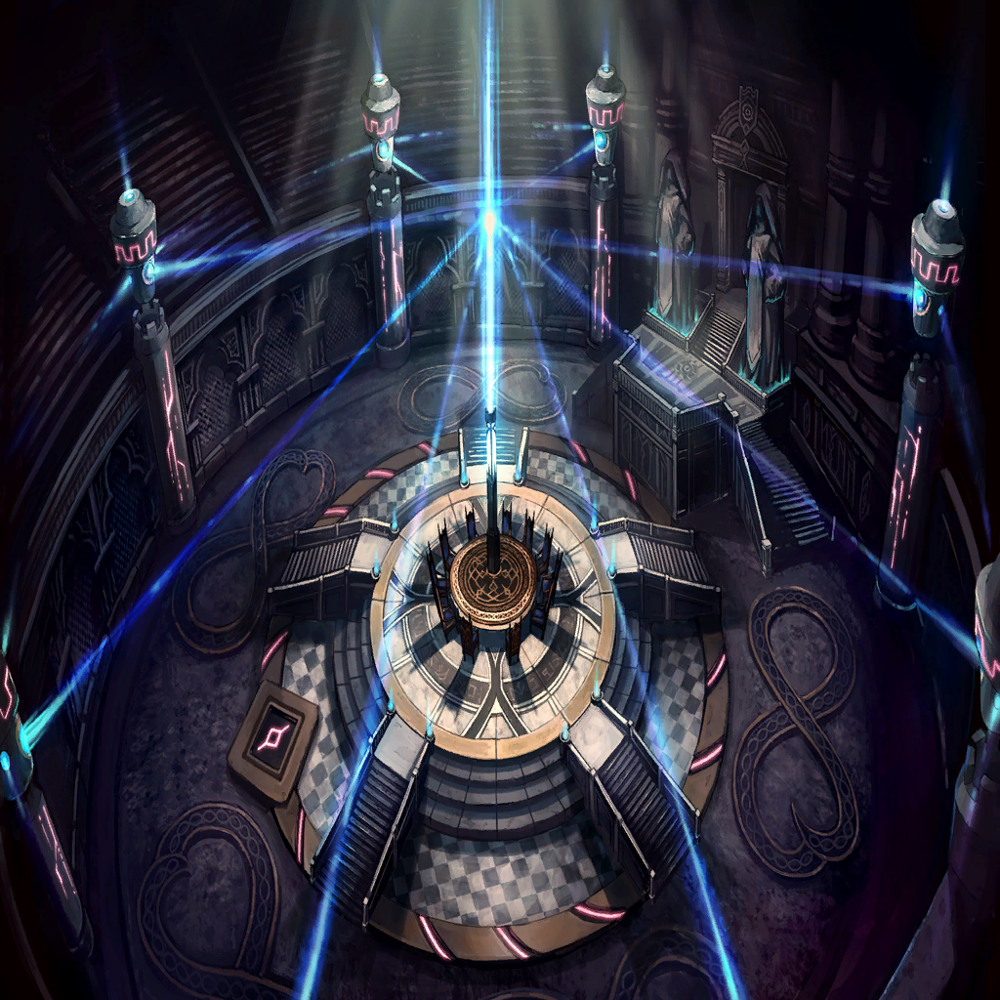
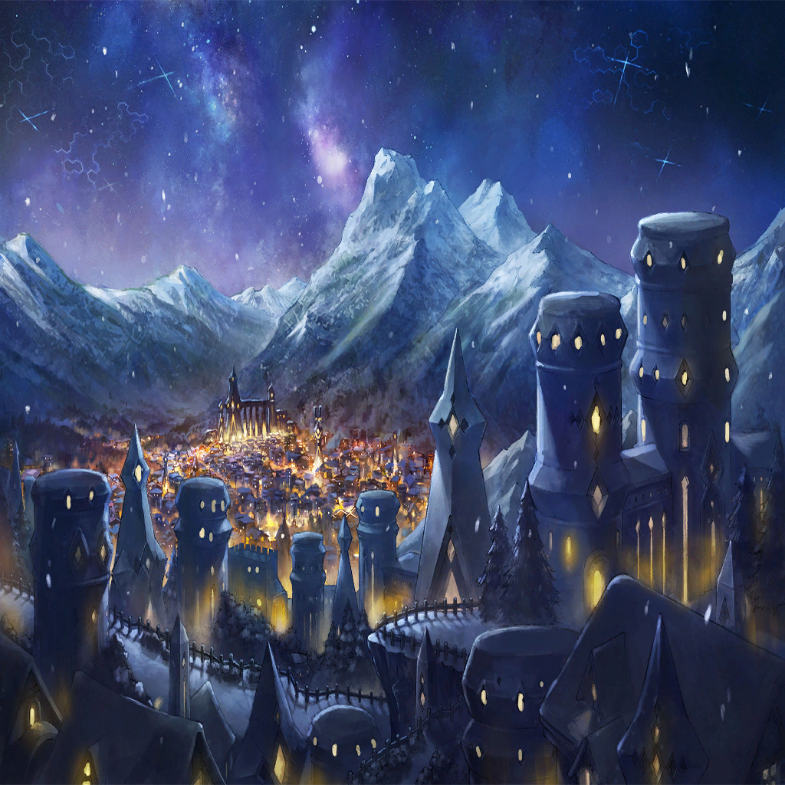
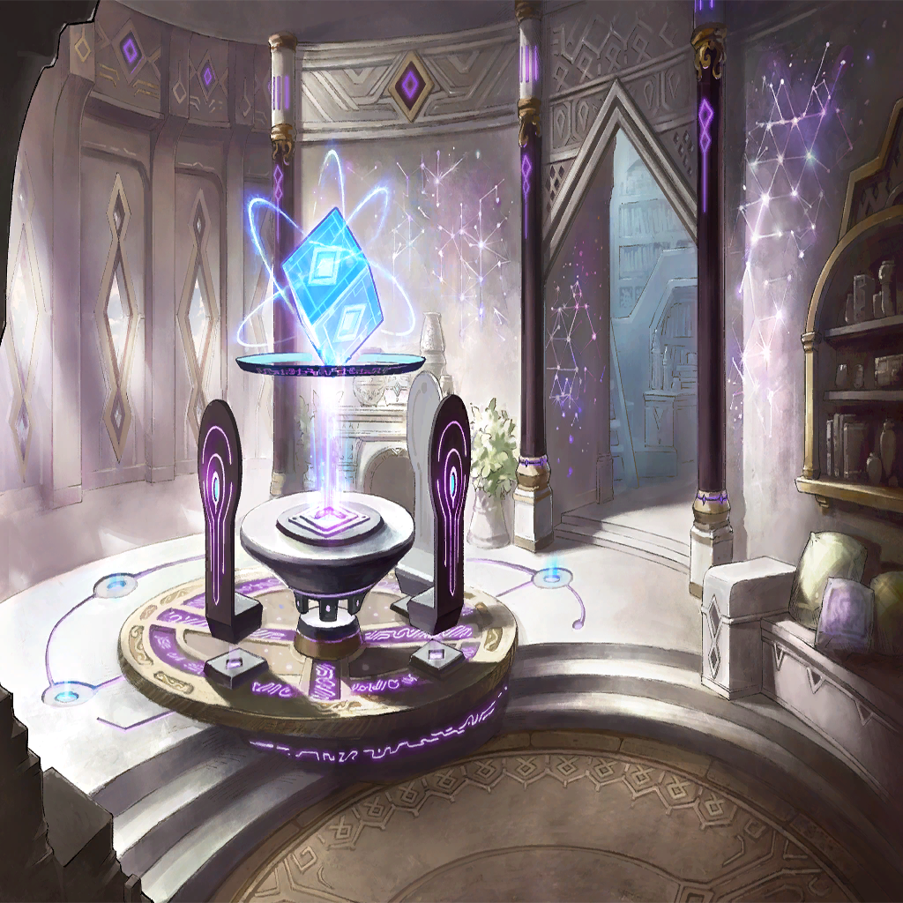
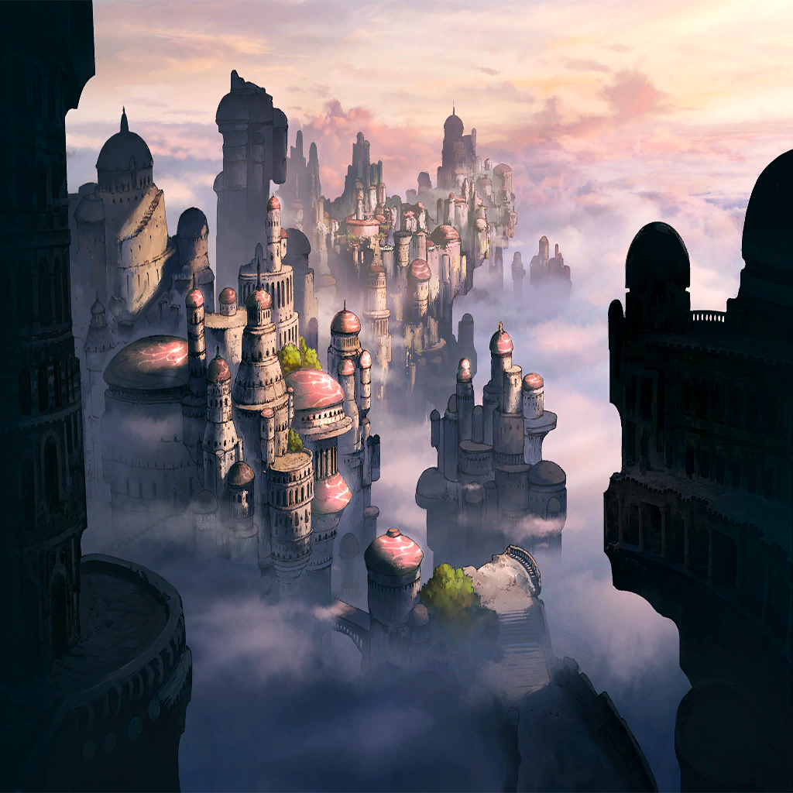

Shahel
Shahel
Shahel


Ambrosia
Ambrosia
Ambrosia
Ambrosia
Ambrosia
Ambrosia

Quence
Quence
Quence
Quence
Quence
Quence
Quence
Quence
Quence
Quence
Quence
Quence
Quence
Quence

| |
|  | |
| ??? | The lid has been tightened upon the end days. The darkness of a new beginning has descended upon the world. |
| ??? | My Lord, I've received a report from the me who is stationed with the nameless dragons. |
| ??? | The Dragon of Wisdom, Schmeier, has been captured. However, we've incurred heavy casualties in the process, making any further operations difficult at this time. |
| ??? | That is all. |
| ??? | Noted. |
| ??? | Advise your other self to come back to base with Schmeier in tow as soon as possible. |
| ??? | Surely a physical body emulating the form of a human cannot last long in a battlefield of dragons. |
| ??? | Would that be prudent, My Lord? I exist as many. Losses in these numbers were both expected and calculated for. |
| ??? | You are a newly born life. Like the humans, you deserve our utmost affection. |
| ??? | For now, I just need you to do as I command, without question. Can you do that for me? |
| ??? | Of course, Lord Ophioneus. Right away. |
Shahel |
I, Shahel, shall make it so. |
Shahel |
And I shall continue to keep record of all things: your ideals, your actions, and...even your failures, without a moment left out. |
| Ophioneus | Good. There is much I expect from you, including that very task. |
| Ophioneus | What I must do is destroy this world and its Truth. That is the only means of atonement we dragons are privy to. |
Shahel |
Destroy the Truth of...? Then... |
| Ophioneus | Yes. The seven pillars that shall bore through the Shell are complete. All that remains is to select those who are worthy enough to bear them. |
| Ophioneus | It is your charge to make this selection, Shahel. |
| |
| |
|  | |
| |
|  | |
| Lil' | Oh, wow! There's so much ice in that cup now! |
| Lil' | That's amazing, Sia! |
Ambrosia |
Heheh! That's the power of magic. Impressive, isn't it? |
Ambrosia |
I mean, it's hardly a match for the magnitude of what you or the other dragons can do, but if variety is what you seek, I'm your witch! |
Ambrosia |
Still have a lot to learn, though, of course. |
Ambrosia |
We witches have to exercise control over the immeasurable magil in the air all around us to produce magical effects, and that's no easy task. |
| Lil' | What else can you do? Can you show me?! |
Ambrosia |
Let's see... I can light fires, boil water... |
Ambrosia |
I can also clean a whole room without lifting a finger! |
| Lil' | Oooohh! |
Quence |
Look at her; so proud of herself! |
Quence |
But the best she can muster is only really useful for doing chores around the house. |
| Zafeiris | ... |
Quence |
Hmm? What's up, Zafeiris? Something bothering you? |
| Zafeiris | To so casually state that your powers come from the manipulation of magil—the blood of dragons... |
Quence |
Dunno what to say. That's just kinda how it works! I believe there was another source of power, though, used to wield magic in the world we came from. |
Quence |
Our teacher provided us with the means to use magil in its place when we arrived here. |
Quence |
She says it's a more efficient catalyst in this world. |
| Zafeiris | Claybelle said that? |
Quence |
Bit acrimonious for you to hear, I'm sure, but yeah. |
| Zafeiris | I feel no acrimony. It is only wise to use what you can for survival's sake, after all. |
Quence |
Hmm... Survival's sake, huh? |
| Zafeiris | Is that not the purpose of it? |
Quence |
Oh, yeah, it is. It's just... You're a lot different from all the other dragons I've met. Claybelle included. |
| Zafeiris | Am I? |
Quence |
My impression of dragons is that you guys live incredibly long lives and wield frighteningly immense power, yet you always seem to have such a nihilistic outlook on life. |
Quence |
Teach fits that description to a T, though some dragons are even more defeatist still. I've even heard a few remark that their species is overdue for extinction. |
Quence |
You all seem to have a sort of...incertitude toward living. Like, you have no qualms about dying at any moment. |
Quence |
But you, specifically, seem to cherish life. You're different from the rest. |
| Zafeiris | ... |
Quence |
Anyway, I need to tend to my cooking. Would you mind calling Claybelle for me? It's about time to get seated. |
| Zafeiris | Certainly. |
| Zafeiris | ...Do I...cherish life? |
|  | |
| Zafeiris | That can't be. I've... I... |
| Lil' | Zafeiris! |
| Zafeiris | Hmm? What is it? |
| Lil' | Are you going to get Claybelle? |
| Zafeiris | That's right. |
| Lil' | Can I come too? |
| Zafeiris | Uh, all right. That's fine. |
| Lil' | Yay! Let's explore the mansion together! |
| Zafeiris | Hmph. Still so childish. |
| Zafeiris | (She is only just a child, though.) |
| Zafeiris | (With Ophioneus' forces after us, it would be wise to move to another Stratum as soon as possible, yet...) |
| Zafeiris | This journey is meant to help her grow. She won't learn much of anything if we do nothing but run from one place to another. |
| Zafeiris | (But what can I do to aid in her education? How much must she experience—how much must she endure—before she is ready?) |
| Zafeiris | Schmeier... Am I performing this duty as you'd hoped I would? |
| |
| Claybelle | Hmm... Seems cleansing this contamination is going to be even more difficult than I thought. |
| Claybelle | But where did it even come from?! No pathogen has ever produced symptoms like this in any of the worlds I've observed before. |
| Claybelle | At least we've been able to confirm that infection is only possible through physical contact. |
| Claybelle | And I believe I've captured and quarantined all the infected. I don't think I missed any, at least! |
| Claybelle | Yet more cases of this illness keep popping up, and the numbers are growing. How? Why?! |
| Claybelle | Is infection possible through other means as well? |
| Claybelle | ...It must be as I suspected. It has to be! The true source of this illness is— |
| Lil' | Claybelle! Food's ready! |
| Claybelle | Ah, wonderful! Perfect time for a break. |
| Claybelle | Tell Quence I'll be there as soon as I've tidied up the lab. |
| Lil' | Okey-doke! |
| Zafeiris | You seem to have already gotten quite accustomed to having her around. |
| Claybelle | She's no different than a human child. I've cared for my fair share of those here. |
| Claybelle | My two disciples were just like her not too long ago. |
| Zafeiris | For my own future reference, if I may ask: how long did it take for your disciples to fully mature? |
| Claybelle | Heh. The short answer is, they haven't! Zafeiris, humans don't just reach maturity one day, and then that's that. |
| Claybelle | Seeing and experiencing many things over many years, they learn bit by bit who they truly are, and gradually achieve what others might consider to be adulthood. The line is not quite so sharp, however. |
| Zafeiris | It takes that long? But humans live such short lives! They'd barely have any life left by the time they finish growing. |
| Claybelle | Ehh, you might be surprised. They have a saying: Even without parents to raise them, children will always grow up. |
| Claybelle | In other words, humans are always maturing on their own through self-discovery, without any outside meddling at all. For some, you might turn around one day and realize, they're an adult now! |
| Zafeiris | But, I don't— |
| Claybelle | Have the luxury of time to let it happen naturally? You've always been a little impatient that way. |
| Claybelle | Do you remember that day we faced each other for the right to claim the title of Guardian Dragon? |
| Claybelle | You showed far too many opportunities for me to exploit, simply because you'd rush in recklessly at the most critical of moments. |
| Zafeiris | Ophioneus is on the move, and his forces will not rest until they've achieved his ends. Lil cannot afford to sit idle and wait for nature to take its course. |
| Claybelle | Hmph. You know, a good friend would've taken a moment—just a moment!—to reminisce with me after hearing something like that! |
| Claybelle | But, you're right, time is of the essence. So what do you plan to do now? Surely you don't intend to stay in this Stratum for long, right? |
| Zafeiris | I'm...not certain. I must admit, I don't fully understand what Schmeier intended for Lil to accomplish. |
| Zafeiris | I've only been told of the final destination: the Genesis Altar. Ultimately, I must take Lil there. But I've been given no further instruc— |
| Zafeiris | Ack! This fluctuation in the magil...! |
| Claybelle | Seems we have more guests to entertain. |
| |
| The Nameless Dragon | Lady Claybelle. Will you not reconsider your stance? It would be most beneficial, for you as well, if you simply give us what we demand. |
| Zafeiris | Does Ophioneus truly intend to destroy the Shell of the World? |
| Zafeiris | Can he not spare but a moment to allow for the culmination of Schmeier's research? For us to make proper contact with Ouroboros? |
| The Nameless Dragon | He cannot. We cannot. It is imperative we proceed. |
| Zafeiris | But, why?! Why must you be so impetuous?! What are you afraid of?! |
| Claybelle | I think I can field that one. They want more than anything to start a war with Ouroboros. |
| Zafeiris | What? Is this true?! |
| The Nameless Dragon | Lady Claybelle, you— |
| Claybelle | Why else would you put so much effort into the pursuit of Ouroboros' child form? |
| Claybelle | Ouroboros is the protective wall keeping this world held together, all while ridding it of hostile entities... |
| Claybelle | Hostile entities from outside, anyway. Everything she does is directed only outward. |
| Claybelle | If that child were to see and learn of all the sin in this world, and then reconnect with the Shell, Ouroboros would come to recognize the hostile entities that exist within it as well. |
| Claybelle | And that's what you fear, isn't it? You feel threatened by the prospect of the Shell of the World willfully smiting those like you. |
| The Nameless Dragon | ... |
| Claybelle | I'll take that as a yes. |
| Zafeiris | If that's what you're all about, then there's absolutely no way I can ever let you have her. |
| Zafeiris | Enough blood is on our claws as it is. Countless lives, not even all dragon, have been lost under our watch. |
| Zafeiris | I cannot permit any further losses solely under the auspices of...what, hiding your shame? |
| The Nameless Dragon | The particulars of our grand design are irrelevant! |
| The Nameless Dragon | We must clear the way for our future! We will do everything in our power to put an end to your journey with her, no matter how much blood we must spill to do so! |
| The Nameless Dragon | That child—the soul of that abominable Shell—must never be permitted to encroach upon the Genesis Altar! |